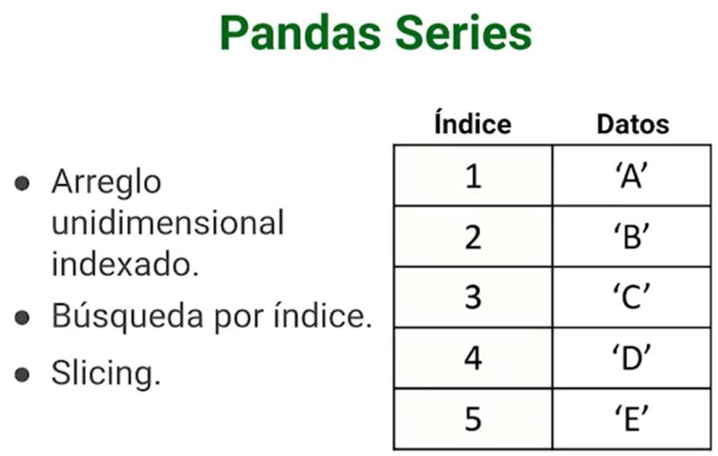
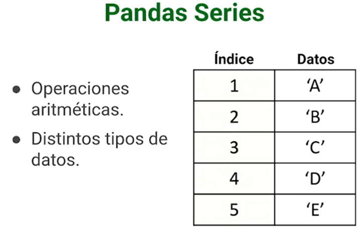
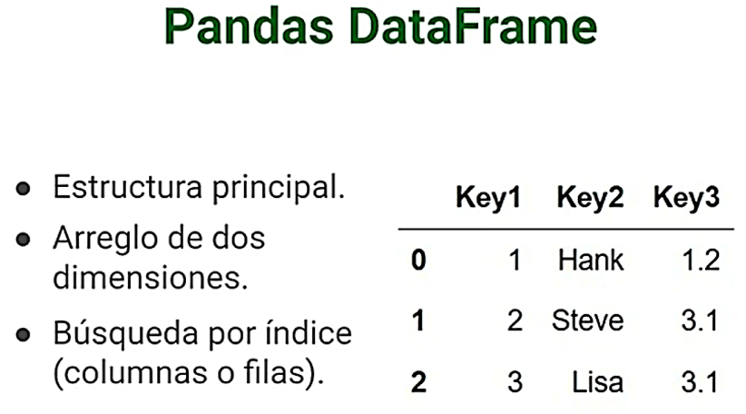
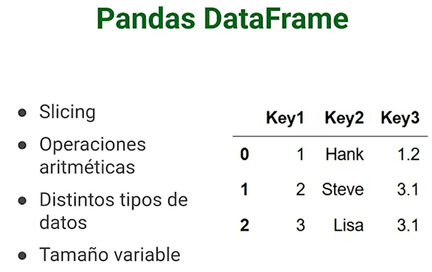

Qu es Pandas?
Pandas es una biblioteca de cdigo abierto para el lenguaje de programacin Python, especializada en el manejo y anlisis de datos. Es una herramienta fundamental para cualquier persona que trabaje con conjuntos de datos en Python.




Caractersticas principales de Pandas:
Estructuras de datos potentes: Define nuevas estructuras de datos como DataFrames y Series, basadas en los arrays de NumPy, pero con funcionalidades ms avanzadas para el manejo de datos tabulares y series temporales.
Manipulacin flexible de datos: Permite leer y escribir datos de diversos formatos comunes, como CSV, Excel, bases de datos SQL y archivos JSON.
Operaciones de anlisis avanzadas: Ofrece una amplia gama de funciones para filtrar, ordenar, agrupar, agregar, combinar y transformar datos de manera eficiente.
Anlisis de series temporales: Brinda herramientas especficas para trabajar con datos de series temporales, como el manejo de fechas, ndices de tiempo y 'resampling'.
Visualizacin de datos: Integra funciones bsicas para la creacin de grficos y visualizaciones de datos.
Se utiliza para:
- Cargar y limpiar datos: Importar datos de diversas fuentes, eliminar valores faltantes y corregir errores.
- Manipular y transformar datos: Reordenar, filtrar, agrupar y agregar datos segn diferentes criterios.
- Analizar datos: Realizar clculos estadsticos, identificar patrones y tendencias en los datos.
- Visualizar datos: Crear grficos y visualizaciones para comunicar los resultados del anlisis.
#!pip install numpy
#!pip install pandas
import numpy as np
import pandas as pd
psg_players = pd.Series(['Navas', 'Mbappe', 'Neymar', 'Messi'], index=[1,7,10,30])
psg_players
1 Navas 7 Mbappe 10 Neymar 30 Messi dtype: object
Pandas, al crear una Series si no se la dan ndices los asigna de forma automtica:
ingredientes = pd.Series(['Jamn', 'Aceitunas', 'Pan', 'Queso'])
ingredientes
0 Jamn 1 Aceitunas 2 Pan 3 Queso dtype: object
dict = {1: 'Navas', 7: 'Mbappe', 10:'Neymar', 30: 'Messi'}
pd.Series(dict)
1 Navas 7 Mbappe 10 Neymar 30 Messi dtype: object
dict_1 = {'Jugador': ['Navas', 'Mbappe', 'Neymar', 'Messi'],
'Altura':[183.0, 170.0, 185.0, 165.0],
'Goles': [2, 150,180,200]}
pd.DataFrame(dict_1, index=[1,7,10,30])
| Jugador | Altura | Goles | |
|---|---|---|---|
| 1 | Navas | 183.0 | 2 |
| 7 | Mbappe | 170.0 | 150 |
| 10 | Neymar | 185.0 | 180 |
| 30 | Messi | 165.0 | 200 |
pd.DataFrame(dict_1)
| Jugador | Altura | Goles | |
|---|---|---|---|
| 0 | Navas | 183.0 | 2 |
| 1 | Mbappe | 170.0 | 150 |
| 2 | Neymar | 185.0 | 180 |
| 3 | Messi | 165.0 | 200 |
df_Players = pd.DataFrame(dict_1)
df_Players
| Jugador | Altura | Goles | |
|---|---|---|---|
| 0 | Navas | 183.0 | 2 |
| 1 | Mbappe | 170.0 | 150 |
| 2 | Neymar | 185.0 | 180 |
| 3 | Messi | 165.0 | 200 |
df_Players.columns
Index(['Jugador', 'Altura', 'Goles'], dtype='object')
df_Players.index
RangeIndex(start=0, stop=4, step=1)
df_Players
| Jugador | Altura | Goles | |
|---|---|---|---|
| 0 | Navas | 183.0 | 2 |
| 1 | Mbappe | 170.0 | 150 |
| 2 | Neymar | 185.0 | 180 |
| 3 | Messi | 165.0 | 200 |
sdata = {"Ohio": 35000, "Texas": 71000, "Oregon": 16000, "Utah": 5000}
obj3 = pd.Series(sdata)
obj3
Ohio 35000 Texas 71000 Oregon 16000 Utah 5000 dtype: int64
obj3.to_dict()
{'Ohio': 35000, 'Texas': 71000, 'Oregon': 16000, 'Utah': 5000}
Cuando slo se pasa un diccionario, el ndice de la Series resultante respetar el orden de las claves segn el mtodo keys del diccionario, que depende del orden de insercin de las claves.
Puede anular esto pasando un ndice con las claves del diccionario en el orden en que desea que aparezcan en la Series resultante:
sdata = {"Ohio": 35000, "Texas": 71000, "Oregon": 16000, "Utah": 5000}
states = ["California", "Ohio", "Oregon", "Texas"]
obj4 = pd.Series(sdata, index=states)
obj4
California NaN Ohio 35000.0 Oregon 16000.0 Texas 71000.0 dtype: float64
Aqu, tres valores encontrados en sdata se colocaron en los lugares apropiados, pero como no se encontr ningn valor para "California", aparece como NaN (Not a Number), que se considera en pandas para marcar valores perdidos o NA. Como "Utah" no se incluy en estados, se excluye del objeto resultante.
Utilizaremos los trminos "missing", "NA" (Not Available) o "null" indistintamente para referirnos a los datos que faltan. Las funciones isna y notna de pandas deben utilizarse para detectar datos omitidos:
pd.isna(obj4)
California True Ohio False Oregon False Texas False dtype: bool
pd.notna(obj4)
California False Ohio True Oregon True Texas True dtype: bool
obj4.isna()
California True Ohio False Oregon False Texas False dtype: bool
obj3
Ohio 35000 Texas 71000 Oregon 16000 Utah 5000 dtype: int64
obj4
California NaN Ohio 35000.0 Oregon 16000.0 Texas 71000.0 dtype: float64
obj3 + obj4
California NaN Ohio 70000.0 Oregon 32000.0 Texas 142000.0 Utah NaN dtype: float64
obj4.name = "population"
obj4.index.name = "state"
obj4
state California NaN Ohio 35000.0 Oregon 16000.0 Texas 71000.0 Name: population, dtype: float64
obj = pd.Series([4, 7, -5, 3])
obj
0 4 1 7 2 -5 3 3 dtype: int64
obj.index = ["Bob", "Steve", "Jeff", "Ryan"]
obj
Bob 4 Steve 7 Jeff -5 Ryan 3 dtype: int64
DataFrame
Un DataFrame representa una tabla rectangular de datos y contiene una coleccin ordenada y nombrada de columnas, cada una de las cuales puede ser un tipo de valor diferente (numrico, cadena, booleano, etc.). El DataFrame tiene tanto un ndice de fila como de columna; puede considerarse como un diccionario de Series que comparten el mismo ndice. Hay muchas maneras de construir un DataFrame, aunque una de las ms comunes es a partir de un diccionario de listas de igual longitud o arrays de NumPy:
data = {"state": ["Ohio", "Ohio", "Ohio", "Nevada", "Nevada", "Nevada"],
"year": [2000, 2001, 2002, 2001, 2002, 2003],
"pop": [1.5, 1.7, 3.6, 2.4, 2.9, 3.2]}
frame = pd.DataFrame(data)
El DataFrame resultante tendr su ndice asignado automticamente, como con Series, y las columnas se colocan segn el orden de las claves en los datos (que depende de su orden de insercin en el diccionario):
frame
| state | year | pop | |
|---|---|---|---|
| 0 | Ohio | 2000 | 1.5 |
| 1 | Ohio | 2001 | 1.7 |
| 2 | Ohio | 2002 | 3.6 |
| 3 | Nevada | 2001 | 2.4 |
| 4 | Nevada | 2002 | 2.9 |
| 5 | Nevada | 2003 | 3.2 |
Para DataFrames grandes, el mtodo head selecciona slo las cinco primeras filas:
frame.head()
| state | year | pop | |
|---|---|---|---|
| 0 | Ohio | 2000 | 1.5 |
| 1 | Ohio | 2001 | 1.7 |
| 2 | Ohio | 2002 | 3.6 |
| 3 | Nevada | 2001 | 2.4 |
| 4 | Nevada | 2002 | 2.9 |
Del mismo modo, tail devuelve las cinco ltimas filas:
frame.tail()
| state | year | pop | |
|---|---|---|---|
| 1 | Ohio | 2001 | 1.7 |
| 2 | Ohio | 2002 | 3.6 |
| 3 | Nevada | 2001 | 2.4 |
| 4 | Nevada | 2002 | 2.9 |
| 5 | Nevada | 2003 | 3.2 |
Si especifica una secuencia de columnas, las columnas del DataFrame se ordenarn en ese orden:
pd.DataFrame(data, columns=["year", "state", "pop"])
| year | state | pop | |
|---|---|---|---|
| 0 | 2000 | Ohio | 1.5 |
| 1 | 2001 | Ohio | 1.7 |
| 2 | 2002 | Ohio | 3.6 |
| 3 | 2001 | Nevada | 2.4 |
| 4 | 2002 | Nevada | 2.9 |
| 5 | 2003 | Nevada | 3.2 |
Si pasa una columna que no est contenida en el diccionario, aparecer con valores ausentes en el resultado:
frame2 = pd.DataFrame(data, columns=["year", "state", "pop", "debt"])
frame2
| year | state | pop | debt | |
|---|---|---|---|---|
| 0 | 2000 | Ohio | 1.5 | NaN |
| 1 | 2001 | Ohio | 1.7 | NaN |
| 2 | 2002 | Ohio | 3.6 | NaN |
| 3 | 2001 | Nevada | 2.4 | NaN |
| 4 | 2002 | Nevada | 2.9 | NaN |
| 5 | 2003 | Nevada | 3.2 | NaN |
frame2.columns
Index(['year', 'state', 'pop', 'debt'], dtype='object')
Una columna de un DataFrame puede recuperarse como una Serie mediante notacin tipo diccionario o utilizando la notacin de atributo . (dot notation):
frame2["state"]
0 Ohio 1 Ohio 2 Ohio 3 Nevada 4 Nevada 5 Nevada Name: state, dtype: object
frame2.year
0 2000 1 2001 2 2002 3 2001 4 2002 5 2003 Name: year, dtype: int64
frame2[column] funciona para cualquier nombre de columna, pero frame2.columnslo funciona cuando el nombre de la columna es un nombre de variable Python vlido y no entra en conflicto con ninguno de los nombres de mtodo de DataFrame. Por ejemplo, si el nombre de una columna contiene espacios en blanco o smbolos que no sean guiones bajos, no se puede acceder a ella con el mtodo de atributo dot.
Observe que las Series devueltas tienen el mismo ndice que el DataFrame, y su atributo name se ha configurado adecuadamente.
Las filas tambin pueden recuperarse por posicin o nombre con los atributos especiales iloc y loc.
frame2
| year | state | pop | debt | |
|---|---|---|---|---|
| 0 | 2000 | Ohio | 1.5 | NaN |
| 1 | 2001 | Ohio | 1.7 | NaN |
| 2 | 2002 | Ohio | 3.6 | NaN |
| 3 | 2001 | Nevada | 2.4 | NaN |
| 4 | 2002 | Nevada | 2.9 | NaN |
| 5 | 2003 | Nevada | 3.2 | NaN |
frame2.loc[1]
year 2001 state Ohio pop 1.7 debt NaN Name: 1, dtype: object
frame2.iloc[2]
year 2002 state Ohio pop 3.6 debt NaN Name: 2, dtype: object
Cul es la diferencia entre iloc y loc?
1- iloc (Index Location):
Se utiliza para seleccionar elementos basados en su ubicacin (ndice de posicin).
-- Para las filas, puedes usar nmeros enteros para acceder a las posiciones. Por ejemplo:
df.iloc[0]Selecciona la primera fila.df.iloc[1]Selecciona la segunda fila.df.iloc[-1]Selecciona la ltima fila.
-- Para las columnas, tambin puedes usar nmeros enteros:
df.iloc[:, 0]Selecciona la primera columna.df.iloc[:, 1]Selecciona la segunda columna.df.iloc[:, -1]Selecciona la ltima columna.
2- loc (Label Location):
Se basa en etiquetas (nombres asignados a filas y columnas). Puedes usar etiquetas personalizadas o nombres de ndice para acceder a los datos.
Ejemplos:
df.loc[0]Selecciona la fila con etiqueta 0.df.loc['Etiqueta_o_nombre_fila']Selecciona la fila con el nombre de la fila o etiqueta.df.loc[:, 'Nombre_Columna']Selecciona una columna por su nombre.
Vuelta al ejemplo de la celda 42
frame2
| year | state | pop | debt | |
|---|---|---|---|---|
| 0 | 2000 | Ohio | 1.5 | NaN |
| 1 | 2001 | Ohio | 1.7 | NaN |
| 2 | 2002 | Ohio | 3.6 | NaN |
| 3 | 2001 | Nevada | 2.4 | NaN |
| 4 | 2002 | Nevada | 2.9 | NaN |
| 5 | 2003 | Nevada | 3.2 | NaN |
Las columnas pueden modificarse por asignacin. Por ejemplo, a la columna debt vaca se le puede asignar un valor escalar o un array de valores:
frame2["debt"] = 16.5
frame2
| year | state | pop | debt | |
|---|---|---|---|---|
| 0 | 2000 | Ohio | 1.5 | 16.5 |
| 1 | 2001 | Ohio | 1.7 | 16.5 |
| 2 | 2002 | Ohio | 3.6 | 16.5 |
| 3 | 2001 | Nevada | 2.4 | 16.5 |
| 4 | 2002 | Nevada | 2.9 | 16.5 |
| 5 | 2003 | Nevada | 3.2 | 16.5 |
Cuando asigne listas o arrays a una columna, la longitud del valor debe coincidir con la longitud del DataFrame. Si asigna una Series, sus etiquetas se realinearn exactamente con el ndice del DataFrame, insertando los valores que falten en cualquier valor del ndice que no est presente:
val = pd.Series([-1.2, -1.5, -1.7], index=[2, 4, 5])
frame2["debt"] = val
frame2
| year | state | pop | debt | |
|---|---|---|---|---|
| 0 | 2000 | Ohio | 1.5 | NaN |
| 1 | 2001 | Ohio | 1.7 | NaN |
| 2 | 2002 | Ohio | 3.6 | -1.2 |
| 3 | 2001 | Nevada | 2.4 | NaN |
| 4 | 2002 | Nevada | 2.9 | -1.5 |
| 5 | 2003 | Nevada | 3.2 | -1.7 |
frame2["eastern"] = frame2["state"] == "Ohio"
frame2
| year | state | pop | debt | eastern | |
|---|---|---|---|---|---|
| 0 | 2000 | Ohio | 1.5 | NaN | True |
| 1 | 2001 | Ohio | 1.7 | NaN | True |
| 2 | 2002 | Ohio | 3.6 | -1.2 | True |
| 3 | 2001 | Nevada | 2.4 | NaN | False |
| 4 | 2002 | Nevada | 2.9 | -1.5 | False |
| 5 | 2003 | Nevada | 3.2 | -1.7 | False |
del frame2["eastern"]
frame2.columns
Index(['year', 'state', 'pop', 'debt'], dtype='object')
frame2
| year | state | pop | debt | |
|---|---|---|---|---|
| 0 | 2000 | Ohio | 1.5 | NaN |
| 1 | 2001 | Ohio | 1.7 | NaN |
| 2 | 2002 | Ohio | 3.6 | -1.2 |
| 3 | 2001 | Nevada | 2.4 | NaN |
| 4 | 2002 | Nevada | 2.9 | -1.5 |
| 5 | 2003 | Nevada | 3.2 | -1.7 |
frame
| state | year | pop | |
|---|---|---|---|
| 0 | Ohio | 2000 | 1.5 |
| 1 | Ohio | 2001 | 1.7 |
| 2 | Ohio | 2002 | 3.6 |
| 3 | Nevada | 2001 | 2.4 |
| 4 | Nevada | 2002 | 2.9 |
| 5 | Nevada | 2003 | 3.2 |
Otra forma comn de datos es un diccionario anidado de diccionarios:
populations = {"Ohio": {2000: 1.5, 2001: 1.7, 2002: 3.6}, "Nevada": {2001: 2.4, 2002: 2.9}}
Si el diccionario anidado se pasa al DataFrame, pandas interpretar las claves externas del diccionario como las columnas, y las claves internas como los ndices de fila:
frame3 = pd.DataFrame(populations)
frame3
| Ohio | Nevada | |
|---|---|---|
| 2000 | 1.5 | NaN |
| 2001 | 1.7 | 2.4 |
| 2002 | 3.6 | 2.9 |
Puede transponer el DataFrame (intercambiar filas y columnas) con una sintaxis similar a la de un array NumPy:
frame3.T
| 2000 | 2001 | 2002 | |
|---|---|---|---|
| Ohio | 1.5 | 1.7 | 3.6 |
| Nevada | NaN | 2.4 | 2.9 |
frame3
| Ohio | Nevada | |
|---|---|---|
| 2000 | 1.5 | NaN |
| 2001 | 1.7 | 2.4 |
| 2002 | 3.6 | 2.9 |
Las claves de los diccionarios internos se combinan para formar el ndice del resultado. Esto no es cierto si se especifica un ndice explcito:
pd.DataFrame(populations, index=[2001, 2002, 2003])
| Ohio | Nevada | |
|---|---|---|
| 2001 | 1.7 | 2.4 |
| 2002 | 3.6 | 2.9 |
| 2003 | NaN | NaN |
Los diccionarios de Series reciben un tratamiento muy similar:
pdata = {"Ohio": frame3["Ohio"][:-1],"Nevada": frame3["Nevada"][:2]}
# frame3["Ohio"][:-1]: Extrae todos los valores de la columna Ohio
# excepto el ltimo valor.
# frame3["Nevada"][:2]:Extrae los primeros dos valores de la columna Nevada
# en el DataFrame frame3.
pdata
{'Ohio': 2000 1.5
2001 1.7
Name: Ohio, dtype: float64,
'Nevada': 2000 NaN
2001 2.4
Name: Nevada, dtype: float64}
pd.DataFrame(pdata)
| Ohio | Nevada | |
|---|---|---|
| 2000 | 1.5 | NaN |
| 2001 | 1.7 | 2.4 |
Si el ndice y las columnas de un DataFrame tienen definidos atributos de nombre, stos tambin se mostrarn:
frame3
| Ohio | Nevada | |
|---|---|---|
| 2000 | 1.5 | NaN |
| 2001 | 1.7 | 2.4 |
| 2002 | 3.6 | 2.9 |
frame3.index.name = "year"
frame3.columns.name = "state"
frame3
| state | Ohio | Nevada |
|---|---|---|
| year | ||
| 2000 | 1.5 | NaN |
| 2001 | 1.7 | 2.4 |
| 2002 | 3.6 | 2.9 |
A diferencia de Series, DataFrame no tiene atributo name. El mtodo to_numpy de DataFrame devuelve los datos contenidos en el DataFrame como un ndarray bidimensional:
frame3.to_numpy()
array([[1.5, nan],
[1.7, 2.4],
[3.6, 2.9]])
Si las columnas del DataFrame son de diferentes tipos de datos, el tipo de datos del array devuelto se elegir para acomodar todas las columnas, veamos lo que contiene frame2:
frame2
| year | state | pop | debt | |
|---|---|---|---|---|
| 0 | 2000 | Ohio | 1.5 | NaN |
| 1 | 2001 | Ohio | 1.7 | NaN |
| 2 | 2002 | Ohio | 3.6 | -1.2 |
| 3 | 2001 | Nevada | 2.4 | NaN |
| 4 | 2002 | Nevada | 2.9 | -1.5 |
| 5 | 2003 | Nevada | 3.2 | -1.7 |
frame2.to_numpy()
array([[2000, 'Ohio', 1.5, nan],
[2001, 'Ohio', 1.7, nan],
[2002, 'Ohio', 3.6, -1.2],
[2001, 'Nevada', 2.4, nan],
[2002, 'Nevada', 2.9, -1.5],
[2003, 'Nevada', 3.2, -1.7]], dtype=object)
Los objetos Index de pandas son responsables de mantener las etiquetas de los ejes (incluyendo los nombres de las columnas de un DataFrame) y otros metadatos (como el nombre o nombres de los ejes). Cualquier array u otra secuencia de etiquetas que se utilice al construir una Series o DataFrame se convierte internamente en un ndice:
obj = pd.Series(np.arange(3), index=["a", "b", "c"])
obj
a 0 b 1 c 2 dtype: int64
index = obj.index
index
Index(['a', 'b', 'c'], dtype='object')
index[1:]
Index(['b', 'c'], dtype='object')
Los objetos ndice son inmutables y, por tanto, no pueden ser modificados por el usuario:
index[1] = "d" # TypeError
--------------------------------------------------------------------------- TypeError Traceback (most recent call last) Cell In[201], line 1 ----> 1 index[1] = "d" # TypeError File ~\anaconda3\envs\Pandas_2024\Lib\site-packages\pandas\core\indexes\base.py:5371, in Index.__setitem__(self, key, value) 5369 @final 5370 def __setitem__(self, key, value) -> None: -> 5371 raise TypeError("Index does not support mutable operations") TypeError: Index does not support mutable operations
La inmutabilidad hace que sea ms seguro compartir objetos ndice entre estructuras de datos:
labels = pd.Index(np.arange(3))
labels
Index([0, 1, 2], dtype='int64')
obj2 = pd.Series([1.5, -2.5, 0], index=labels)
obj2
0 1.5 1 -2.5 2 0.0 dtype: float64
obj2.index is labels
True
Adems de ser similar a un array, un ndice tambin se comporta como un conjunto (set) de tamao fijo:
frame3
| state | Ohio | Nevada |
|---|---|---|
| year | ||
| 2000 | 1.5 | NaN |
| 2001 | 1.7 | 2.4 |
| 2002 | 3.6 | 2.9 |
frame3.columns
Index(['Ohio', 'Nevada'], dtype='object', name='state')
"Ohio" in frame3.columns
True
2003 in frame3.index
False
A diferencia de los conjuntos (set()) de Python, un ndice de pandas puede contener etiquetas duplicadas:
pd.Index(["foo", "foo", "bar", "bar"])
Index(['foo', 'foo', 'bar', 'bar'], dtype='object')
Las selecciones con etiquetas duplicadas tomarn todas las apariciones de esa etiqueta. Cada ndice tiene una serie de mtodos y propiedades para la lgica de conjuntos, que responden a otras preguntas habituales sobre los datos que contiene. Algunas de las ms tiles se resumen en:
Un mtodo importante en los objetos pandas es reindex, que significa crear un nuevo objeto con los valores reordenados para alinearlos con el nuevo ndice. Consideremos un ejemplo:
obj = pd.Series([4.5, 7.2, -5.3, 3.6], index=["d", "b", "a", "c"])
obj
d 4.5 b 7.2 a -5.3 c 3.6 dtype: float64
Si se llama a reindex en esta Series, los datos se reordenan de acuerdo con el nuevo ndice, introduciendo los valores que faltan si alguno de los valores del ndice no estaba ya presente:
obj2 = obj.reindex(["a", "b", "c", "d", "e"])
obj2
a -5.3 b 7.2 c 3.6 d 4.5 e NaN dtype: float64
En el caso de datos ordenados como series temporales, es posible que desee realizar alguna interpolacin o relleno de valores al reindexar. Utilizando un mtodo como ffill, que rellena los valores hacia delante:
obj3 = pd.Series(["blue", "purple", "yellow"], index=[0, 2, 4])
obj3
0 blue 2 purple 4 yellow dtype: object
obj3.reindex(np.arange(6), method="ffill")
0 blue 1 blue 2 purple 3 purple 4 yellow 5 yellow dtype: object
Con DataFrame, reindex puede alterar el ndice (de filas), las columnas o ambos. Si slo se le pasa una secuencia, reindexa las filas del resultado:
frame = pd.DataFrame(np.arange(9).reshape((3, 3)),index=["a", "c", "d"],columns=["Ohio", "Texas", "California"])
frame
| Ohio | Texas | California | |
|---|---|---|---|
| a | 0 | 1 | 2 |
| c | 3 | 4 | 5 |
| d | 6 | 7 | 8 |
frame2 = frame.reindex(index=["a", "b", "c", "d"])
frame2
| Ohio | Texas | California | |
|---|---|---|---|
| a | 0.0 | 1.0 | 2.0 |
| b | NaN | NaN | NaN |
| c | 3.0 | 4.0 | 5.0 |
| d | 6.0 | 7.0 | 8.0 |
The columns can be reindexed with the columns keyword:
frame
| Ohio | Texas | California | |
|---|---|---|---|
| a | 0 | 1 | 2 |
| c | 3 | 4 | 5 |
| d | 6 | 7 | 8 |
states = ["Texas", "Utah", "California"]
frame.reindex(columns=states)
| Texas | Utah | California | |
|---|---|---|---|
| a | 1 | NaN | 2 |
| c | 4 | NaN | 5 |
| d | 7 | NaN | 8 |
Como "Ohio" no estaba en los states, los datos de esa columna se eliminan del resultado. Otra forma de hacer reindex en un eje concreto es pasar las nuevas etiquetas de eje como argumento posicional y, a continuacin, especificar el eje que se va a reindexar con la palabra clave axis:
frame.reindex(states, axis="columns")
| Texas | Utah | California | |
|---|---|---|---|
| a | 1 | NaN | 2 |
| c | 4 | NaN | 5 |
| d | 7 | NaN | 8 |
Consulte la siguiente tabla para obtener ms informacin sobre los argumentos para reindexar.
En un DataFrame tambien se puede usar loc e iloc, para reindexar, y muchos usuarios prefieren hacerlo siempre de esta manera. Esto slo funciona si todas las nuevas etiquetas de ndice ya existen en el DataFrame (mientras que reindex insertar los datos que falten para las nuevas etiquetas):
frame
| Ohio | Texas | California | |
|---|---|---|---|
| a | 0 | 1 | 2 |
| c | 3 | 4 | 5 |
| d | 6 | 7 | 8 |
frame.loc[["a", "d", "c"], ["California", "Texas"]]
| California | Texas | |
|---|---|---|
| a | 2 | 1 |
| d | 8 | 7 |
| c | 5 | 4 |
Eliminar una o ms entradas de un eje es sencillo si ya tienes un array o una lista de ndices sin esas entradas, ya que puedes utilizar el mtodo reindex o la indexacin basada en .loc. Como eso puede requerir un poco de lgica el mtodo drop devolver un nuevo objeto con el valor o valores indicados eliminados de un eje:
obj = pd.Series(np.arange(5.), index=["a", "b", "c", "d", "e"])
obj
a 0.0 b 1.0 c 2.0 d 3.0 e 4.0 dtype: float64
#alvknasdlvkasdovl
new_obj = obj.drop("c")
new_obj
a 0.0 b 1.0 d 3.0 e 4.0 dtype: float64
obj.drop(["d", "c"])
a 0.0 b 1.0 e 4.0 dtype: float64
Con DataFrame, los valores ndice se pueden eliminar de cualquiera de los ejes. Para ilustrar esto, primero crearemos un DataFrame de ejemplo:
data = pd.DataFrame(np.arange(16).reshape((4, 4)),
index=["Ohio", "Colorado", "Utah", "New York"],
columns=["one", "two", "three", "four"])
data
| one | two | three | four | |
|---|---|---|---|---|
| Ohio | 0 | 1 | 2 | 3 |
| Colorado | 4 | 5 | 6 | 7 |
| Utah | 8 | 9 | 10 | 11 |
| New York | 12 | 13 | 14 | 15 |
Si se llama a drop con una secuencia de etiquetas, se eliminarn los valores de las etiquetas de fila (eje 0):
data.drop(index=["Colorado", "Ohio"])
| one | two | three | four | |
|---|---|---|---|---|
| Utah | 8 | 9 | 10 | 11 |
| New York | 12 | 13 | 14 | 15 |
Para eliminar las etiquetas de las columnas, utilice en su lugar la palabra clave columns:
data.drop(columns=["two"])
| one | three | four | |
|---|---|---|---|
| Ohio | 0 | 2 | 3 |
| Colorado | 4 | 6 | 7 |
| Utah | 8 | 10 | 11 |
| New York | 12 | 14 | 15 |
Tambin puede eliminar valores de las columnas pasando axis=1 ( como en NumPy) o axis="columns":
data.drop("two", axis=1)
| one | three | four | |
|---|---|---|---|
| Ohio | 0 | 2 | 3 |
| Colorado | 4 | 6 | 7 |
| Utah | 8 | 10 | 11 |
| New York | 12 | 14 | 15 |
data.drop(["two", "four"], axis="columns")
| one | three | |
|---|---|---|
| Ohio | 0 | 2 |
| Colorado | 4 | 6 |
| Utah | 8 | 10 |
| New York | 12 | 14 |
La indexacin de series (obj[...]) funciona de forma anloga a la indexacin de arrays de NumPy, con la diferencia de que puedes utilizar los valores ndice de la serie en lugar de slo enteros. He aqu algunos ejemplos:
obj = pd.Series(np.arange(4.), index=["a", "b", "c", "d"])
obj
a 0.0 b 1.0 c 2.0 d 3.0 dtype: float64
obj["b"]
np.float64(1.0)
obj[1]
C:\Users\CursosTardes\AppData\Local\Temp\ipykernel_9308\2469632899.py:1: FutureWarning: Series.__getitem__ treating keys as positions is deprecated. In a future version, integer keys will always be treated as labels (consistent with DataFrame behavior). To access a value by position, use `ser.iloc[pos]` obj[1]
np.float64(1.0)
obj[2:4]
c 2.0 d 3.0 dtype: float64
obj[["b", "a", "d"]]
b 1.0 a 0.0 d 3.0 dtype: float64
obj[[1, 3]]
C:\Users\CursosTardes\AppData\Local\Temp\ipykernel_9308\2982346117.py:1: FutureWarning: Series.__getitem__ treating keys as positions is deprecated. In a future version, integer keys will always be treated as labels (consistent with DataFrame behavior). To access a value by position, use `ser.iloc[pos]` obj[[1, 3]]
b 1.0 d 3.0 dtype: float64
obj[obj < 2]
a 0.0 b 1.0 dtype: float64
Aunque puede seleccionar datos por etiqueta de esta manera, la forma preferida de seleccionar valores de ndice es con el operador especial loc:
obj.loc[["b", "a", "d"]]
b 1.0 a 0.0 d 3.0 dtype: float64
La razn para preferir loc es el tratamiento diferente de los enteros cuando se indexa con []. La indexacin normal basada en [] tratar los enteros como etiquetas si el ndice contiene enteros, por lo que el comportamiento difiere dependiendo del tipo de datos del ndice. Por ejemplo:
obj1 = pd.Series([1, 2, 3], index=[2, 0, 1])
obj2 = pd.Series([1, 2, 3], index=["a", "b", "c"])
obj1
2 1 0 2 1 3 dtype: int64
obj2
a 1 b 2 c 3 dtype: int64
obj1[[0, 1, 2]]
0 2 1 3 2 1 dtype: int64
obj2[[0, 1, 2]]
C:\Users\CursosTardes\AppData\Local\Temp\ipykernel_9308\2599987575.py:1: FutureWarning: Series.__getitem__ treating keys as positions is deprecated. In a future version, integer keys will always be treated as labels (consistent with DataFrame behavior). To access a value by position, use `ser.iloc[pos]` obj2[[0, 1, 2]]
a 1 b 2 c 3 dtype: int64
Al utilizar loc, la expresin obj.loc[[0, 1, 2]] fallar cuando el ndice no contenga enteros:
obj2.loc[[0, 1]]
--------------------------------------------------------------------------- KeyError Traceback (most recent call last) Cell In[243], line 1 ----> 1 obj2.loc[[0, 1]] File ~\anaconda3\envs\Pandas_2024\Lib\site-packages\pandas\core\indexing.py:1191, in _LocationIndexer.__getitem__(self, key) 1189 maybe_callable = com.apply_if_callable(key, self.obj) 1190 maybe_callable = self._check_deprecated_callable_usage(key, maybe_callable) -> 1191 return self._getitem_axis(maybe_callable, axis=axis) File ~\anaconda3\envs\Pandas_2024\Lib\site-packages\pandas\core\indexing.py:1420, in _LocIndexer._getitem_axis(self, key, axis) 1417 if hasattr(key, "ndim") and key.ndim > 1: 1418 raise ValueError("Cannot index with multidimensional key") -> 1420 return self._getitem_iterable(key, axis=axis) 1422 # nested tuple slicing 1423 if is_nested_tuple(key, labels): File ~\anaconda3\envs\Pandas_2024\Lib\site-packages\pandas\core\indexing.py:1360, in _LocIndexer._getitem_iterable(self, key, axis) 1357 self._validate_key(key, axis) 1359 # A collection of keys -> 1360 keyarr, indexer = self._get_listlike_indexer(key, axis) 1361 return self.obj._reindex_with_indexers( 1362 {axis: [keyarr, indexer]}, copy=True, allow_dups=True 1363 ) File ~\anaconda3\envs\Pandas_2024\Lib\site-packages\pandas\core\indexing.py:1558, in _LocIndexer._get_listlike_indexer(self, key, axis) 1555 ax = self.obj._get_axis(axis) 1556 axis_name = self.obj._get_axis_name(axis) -> 1558 keyarr, indexer = ax._get_indexer_strict(key, axis_name) 1560 return keyarr, indexer File ~\anaconda3\envs\Pandas_2024\Lib\site-packages\pandas\core\indexes\base.py:6200, in Index._get_indexer_strict(self, key, axis_name) 6197 else: 6198 keyarr, indexer, new_indexer = self._reindex_non_unique(keyarr) -> 6200 self._raise_if_missing(keyarr, indexer, axis_name) 6202 keyarr = self.take(indexer) 6203 if isinstance(key, Index): 6204 # GH 42790 - Preserve name from an Index File ~\anaconda3\envs\Pandas_2024\Lib\site-packages\pandas\core\indexes\base.py:6249, in Index._raise_if_missing(self, key, indexer, axis_name) 6247 if nmissing: 6248 if nmissing == len(indexer): -> 6249 raise KeyError(f"None of [{key}] are in the [{axis_name}]") 6251 not_found = list(ensure_index(key)[missing_mask.nonzero()[0]].unique()) 6252 raise KeyError(f"{not_found} not in index") KeyError: "None of [Index([0, 1], dtype='int64')] are in the [index]"
Dado que el operador loc indexa exclusivamente con etiquetas, existe tambin un operador iloc que indexa exclusivamente con enteros para trabajar de forma consistente tanto si el ndice contiene enteros como si no:
obj1.iloc[[0, 1, 2]]
2 1 0 2 1 3 dtype: int64
obj2.iloc[[0, 1, 2]]
a 1 b 2 c 3 dtype: int64
Precaucin: Tambin se puede rebanar (slice) con etiquetas, pero funciona de forma diferente al rebanado(slicing) normal de Python, ya que el punto final es inclusivo:
obj2.loc["b":"c"]
b 2 c 3 dtype: int64
La asignacin de valores mediante estos mtodos modifica la seccin correspondiente de la Series:
obj2
a 1 b 2 c 3 dtype: int64
obj2.loc["b":"c"] = 5
obj2
a 1 b 5 c 5 dtype: int64
La indexacin en un DataFrame recupera una o ms columnas, ya sea con un nico valor o con una secuencia:
data = pd.DataFrame(np.arange(16).reshape((4, 4)),
index=["Ohio", "Colorado", "Utah", "New York"],
columns=["one", "two", "three", "four"])
data
| one | two | three | four | |
|---|---|---|---|---|
| Ohio | 0 | 1 | 2 | 3 |
| Colorado | 4 | 5 | 6 | 7 |
| Utah | 8 | 9 | 10 | 11 |
| New York | 12 | 13 | 14 | 15 |
data["two"]
Ohio 1 Colorado 5 Utah 9 New York 13 Name: two, dtype: int64
data[["three", "one"]]
| three | one | |
|---|---|---|
| Ohio | 2 | 0 |
| Colorado | 6 | 4 |
| Utah | 10 | 8 |
| New York | 14 | 12 |
Este tipo de indexacin tiene algunos casos especiales. El primero es el corte (slicing) o la seleccin de datos con una array booleano:
data[:2]
# selecciona las primeras dos filas del DataFrame.
| one | two | three | four | |
|---|---|---|---|---|
| Ohio | 0 | 1 | 2 | 3 |
| Colorado | 4 | 5 | 6 | 7 |
booleano_a= ali.to_numpy()
booleano_a
--------------------------------------------------------------------------- NameError Traceback (most recent call last) Cell In[253], line 1 ----> 1 booleano_a= ali.to_numpy() 2 booleano_a NameError: name 'ali' is not defined
data[data["three"] > 5]
| one | two | three | four | |
|---|---|---|---|---|
| Colorado | 4 | 5 | 6 | 7 |
| Utah | 8 | 9 | 10 | 11 |
| New York | 12 | 13 | 14 | 15 |
La sintaxis de seleccin de filas data[:2] se proporciona por comodidad. Si se pasa un nico elemento o una lista al operador [] selecciona columnas.
Otro caso de uso es la indexacin con un DataFrame booleano, como el producido por una comparacin escalar. Considere un DataFrame con todos los valores booleanos producidos por comparacin con un valor escalar:
data < 5
| one | two | three | four | |
|---|---|---|---|---|
| Ohio | True | True | True | True |
| Colorado | True | False | False | False |
| Utah | False | False | False | False |
| New York | False | False | False | False |
Podemos utilizar este DataFrame para asignar el valor 0 a cada ubicacin con el valor True, as:
data[data < 5] = 0
data
| one | two | three | four | |
|---|---|---|---|---|
| Ohio | 0 | 0 | 0 | 0 |
| Colorado | 0 | 5 | 6 | 7 |
| Utah | 8 | 9 | 10 | 11 |
| New York | 12 | 13 | 14 | 15 |
Al igual que Series, los DataFrame tiene atributos especiales loc e iloc para la indexacin basada en etiquetas y en enteros, respectivamente. Como un DataFrame es bidimensional, puede seleccionar un subconjunto de filas y columnas con notacin tipo NumPy utilizando etiquetas de eje (loc) o enteros (iloc).
Como primer ejemplo, vamos a seleccionar una sola fila por etiqueta:
data
| one | two | three | four | |
|---|---|---|---|---|
| Ohio | 0 | 0 | 0 | 0 |
| Colorado | 0 | 5 | 6 | 7 |
| Utah | 8 | 9 | 10 | 11 |
| New York | 12 | 13 | 14 | 15 |
data.loc["Colorado"]
one 0 two 5 three 6 four 7 Name: Colorado, dtype: int64
El resultado de seleccionar una sola fila es una Series con un ndice que contiene las etiquetas de las columnas del DataFrame. Para seleccionar mltiples valores, creando un nuevo DataFrame, se le pasa una secuencia de etiquetas:
data.loc[["Colorado", "New York"]]
| one | two | three | four | |
|---|---|---|---|---|
| Colorado | 0 | 5 | 6 | 7 |
| New York | 12 | 13 | 14 | 15 |
Puede combinar la seleccin de filas y columnas en loc separando las selecciones con una coma:
data.loc["Colorado", ["two", "three"]]
two 5 three 6 Name: Colorado, dtype: int64
A continuacin, realizaremos algunas selecciones similares con enteros utilizando iloc:
data.iloc[2]
one 8 two 9 three 10 four 11 Name: Utah, dtype: int64
data.iloc[[2, 1]]
| one | two | three | four | |
|---|---|---|---|---|
| Utah | 8 | 9 | 10 | 11 |
| Colorado | 0 | 5 | 6 | 7 |
data.iloc[2, [3, 0, 1]]
four 11 one 8 two 9 Name: Utah, dtype: int64
data.iloc[[1, 2], [3, 0, 1]]
| four | one | two | |
|---|---|---|---|
| Colorado | 7 | 0 | 5 |
| Utah | 11 | 8 | 9 |
Ambas funciones de indexacin funcionan con trozos (slices) adems de con etiquetas individuales o listas de etiquetas:
data
| one | two | three | four | |
|---|---|---|---|---|
| Ohio | 0 | 0 | 0 | 0 |
| Colorado | 0 | 5 | 6 | 7 |
| Utah | 8 | 9 | 10 | 11 |
| New York | 12 | 13 | 14 | 15 |
data.loc[:"Utah", "two"]
# Devuelve los valores de la columna "two"
# para todas las filas desde el inicio
# hasta la fila con la etiqueta "Utah"
Ohio 0 Colorado 5 Utah 9 Name: two, dtype: int64
data.iloc[:, :3][data.three > 5]
# Muestra las filas que cumplen
# la condicin data.three > 5
# para las columnas 'one', 'two'
# y 'three'
# Para mayor claridad ejecute
# data.iloc[:, :3] y luego
# data.iloc[:, :3][data.three > 5]
| one | two | three | |
|---|---|---|---|
| Colorado | 0 | 5 | 6 |
| Utah | 8 | 9 | 10 |
| New York | 12 | 13 | 14 |
Los arrays Booleanos pueden ser usados con loc pero no iloc:
Considere lo siguiente:
data.three >= 2
Ohio False Colorado True Utah True New York True Name: three, dtype: bool
data.loc[data.three >= 2]
| one | two | three | four | |
|---|---|---|---|---|
| Colorado | 0 | 5 | 6 | 7 |
| Utah | 8 | 9 | 10 | 11 |
| New York | 12 | 13 | 14 | 15 |
Hay muchas formas de seleccionar y reordenar los datos contenidos en un objeto pandas. Para un DataFrame, la siguiente tabla proporciona un breve resumen de muchas de ellas. Como se ver ms adelante, hay una serie de opciones adicionales para trabajar con ndices jerrquicos.
Trabajar con objetos pandas indexados por enteros puede ser un escollo para los nuevos usuarios ya que funcionan de forma diferente a las estructuras de datos incorporadas en Python como listas y tuplas. Por ejemplo, es posible que no espere que el siguiente cdigo genere un error:
ser = pd.Series(np.arange(3.))
ser
0 0.0 1 1.0 2 2.0 dtype: float64
ser[-1]
--------------------------------------------------------------------------- ValueError Traceback (most recent call last) File ~\anaconda3\envs\Pandas_2024\Lib\site-packages\pandas\core\indexes\range.py:413, in RangeIndex.get_loc(self, key) 412 try: --> 413 return self._range.index(new_key) 414 except ValueError as err: ValueError: -1 is not in range The above exception was the direct cause of the following exception: KeyError Traceback (most recent call last) Cell In[272], line 1 ----> 1 ser[-1] File ~\anaconda3\envs\Pandas_2024\Lib\site-packages\pandas\core\series.py:1121, in Series.__getitem__(self, key) 1118 return self._values[key] 1120 elif key_is_scalar: -> 1121 return self._get_value(key) 1123 # Convert generator to list before going through hashable part 1124 # (We will iterate through the generator there to check for slices) 1125 if is_iterator(key): File ~\anaconda3\envs\Pandas_2024\Lib\site-packages\pandas\core\series.py:1237, in Series._get_value(self, label, takeable) 1234 return self._values[label] 1236 # Similar to Index.get_value, but we do not fall back to positional -> 1237 loc = self.index.get_loc(label) 1239 if is_integer(loc): 1240 return self._values[loc] File ~\anaconda3\envs\Pandas_2024\Lib\site-packages\pandas\core\indexes\range.py:415, in RangeIndex.get_loc(self, key) 413 return self._range.index(new_key) 414 except ValueError as err: --> 415 raise KeyError(key) from err 416 if isinstance(key, Hashable): 417 raise KeyError(key) KeyError: -1
En este caso, pandas podra "recurrir" a la indexacin por enteros, pero es difcil hacer esto en general sin introducir errores sutiles en el cdigo de usuario. Aqu tenemos un ndice que contiene 0, 1 y 2, pero pandas no quiere adivinar lo que quiere el usuario (indexacin basada en etiquetas o basada en posiciones):
ser
En cambio, con un ndice no entero, no existe tal ambigedad:
ser2 = pd.Series(np.arange(3.), index=["a", "b", "c"])
ser2[-1]
C:\Users\CursosTardes\AppData\Local\Temp\ipykernel_9308\821879068.py:2: FutureWarning: Series.__getitem__ treating keys as positions is deprecated. In a future version, integer keys will always be treated as labels (consistent with DataFrame behavior). To access a value by position, use `ser.iloc[pos]` ser2[-1]
np.float64(2.0)
Si tienes un ndice de eje que contiene enteros, la seleccin de datos siempre estar orientada a etiquetas. Como se ha dicho anteriormente, si se utiliza loc (para etiquetas) o iloc (para enteros) se obtendr exactamente lo que se desea:
ser.iloc[-1]
np.float64(2.0)
Por otra parte, el corte (slicing) con nmeros enteros siempre est orientado a nmeros enteros:
ser[:2]
0 0.0 1 1.0 dtype: float64
Como consecuencia de estos errores, es mejor preferir siempre la indexacin con loc e iloc para evitar ambigedades.
En la seccin anterior vimos cmo se pueden hacer selecciones flexibles en un DataFrame utilizando loc e iloc. Estos atributos de indexacin tambin se pueden utilizar para modificar objetos DataFrame "in situ", pero hacerlo requiere cierto cuidado.
Por ejemplo, en el ejemplo DataFrame anterior, podemos asignar a una columna o fila por etiqueta o posicin entera:
data
| one | two | three | four | |
|---|---|---|---|---|
| Ohio | 0 | 0 | 0 | 0 |
| Colorado | 0 | 5 | 6 | 7 |
| Utah | 8 | 9 | 10 | 11 |
| New York | 12 | 13 | 14 | 15 |
data.loc[:, "one"] = 1
data
| one | two | three | four | |
|---|---|---|---|---|
| Ohio | 1 | 0 | 0 | 0 |
| Colorado | 1 | 5 | 6 | 7 |
| Utah | 1 | 9 | 10 | 11 |
| New York | 1 | 13 | 14 | 15 |
data.iloc[2] = 5
data
| one | two | three | four | |
|---|---|---|---|---|
| Ohio | 1 | 0 | 0 | 0 |
| Colorado | 1 | 5 | 6 | 7 |
| Utah | 5 | 5 | 5 | 5 |
| New York | 1 | 13 | 14 | 15 |
data.loc[data["four"] > 5] = 3
data
| one | two | three | four | |
|---|---|---|---|---|
| Ohio | 1 | 0 | 0 | 0 |
| Colorado | 3 | 3 | 3 | 3 |
| Utah | 5 | 5 | 5 | 5 |
| New York | 3 | 3 | 3 | 3 |
Un error comn para los nuevos usuarios de pandas es encadenar selecciones cuando se asignan de esta manera:
data
| one | two | three | four | |
|---|---|---|---|---|
| Ohio | 1 | 0 | 0 | 0 |
| Colorado | 3 | 3 | 3 | 3 |
| Utah | 5 | 5 | 5 | 5 |
| New York | 3 | 3 | 3 | 3 |
data.loc[data.three == 5]
# La condicin data.three == 5
# crea una Serie booleana que
# tiene True para las filas
# donde el valor en la columna "three"
# es igual a 5 y False para las dems filas.
| one | two | three | four | |
|---|---|---|---|---|
| Utah | 5 | 5 | 5 | 5 |
data.loc[data.three == 5]["three"] = 6
C:\Users\CursosTardes\AppData\Local\Temp\ipykernel_9308\867481848.py:1: SettingWithCopyWarning: A value is trying to be set on a copy of a slice from a DataFrame. Try using .loc[row_indexer,col_indexer] = value instead See the caveats in the documentation: https://pandas.pydata.org/pandas-docs/stable/user_guide/indexing.html#returning-a-view-versus-a-copy data.loc[data.three == 5]["three"] = 6
Dependiendo del contenido de los datos, esto puede imprimir una advertencia especial SettingWithCopyWarning, que le advierte de que est intentando modificar un valor temporal (el resultado no vaco de data.loc[data.three == 5]) en lugar del DataFrame original data, que podra ser lo que pretenda. En este caso, data no se ha modificado:
data
| one | two | three | four | |
|---|---|---|---|---|
| Ohio | 1 | 0 | 0 | 0 |
| Colorado | 3 | 3 | 3 | 3 |
| Utah | 5 | 5 | 5 | 5 |
| New York | 3 | 3 | 3 | 3 |
En estos casos, la solucin consiste en reescribir la asignacin encadenada para utilizar una nica operacin loc:
data.loc[data.three == 5, "three"] = 6
data
| one | two | three | four | |
|---|---|---|---|---|
| Ohio | 1 | 0 | 0 | 0 |
| Colorado | 3 | 3 | 3 | 3 |
| Utah | 5 | 5 | 6 | 5 |
| New York | 3 | 3 | 3 | 3 |
s1 = pd.Series([7.3, -2.5, 3.4, 1.5], index=["a", "c", "d", "e"])
s1
a 7.3 c -2.5 d 3.4 e 1.5 dtype: float64
s2 = pd.Series([-2.1, 3.6, -1.5, 4, 3.1],
index=["a", "c", "e", "f", "g"])
s2
a -2.1 c 3.6 e -1.5 f 4.0 g 3.1 dtype: float64
s1 + s2
a 5.2 c 1.1 d NaN e 0.0 f NaN g NaN dtype: float64
df1 = pd.DataFrame(np.arange(9.).reshape((3, 3)), columns=list("bcd"),
index=["Ohio", "Texas", "Colorado"])
df2 = pd.DataFrame(np.arange(12.).reshape((4, 3)), columns=list("bde"),
index=["Utah", "Ohio", "Texas", "Oregon"])
df1
| b | c | d | |
|---|---|---|---|
| Ohio | 0.0 | 1.0 | 2.0 |
| Texas | 3.0 | 4.0 | 5.0 |
| Colorado | 6.0 | 7.0 | 8.0 |
df2
| b | d | e | |
|---|---|---|---|
| Utah | 0.0 | 1.0 | 2.0 |
| Ohio | 3.0 | 4.0 | 5.0 |
| Texas | 6.0 | 7.0 | 8.0 |
| Oregon | 9.0 | 10.0 | 11.0 |
df1 + df2
| b | c | d | e | |
|---|---|---|---|---|
| Colorado | NaN | NaN | NaN | NaN |
| Ohio | 3.0 | NaN | 6.0 | NaN |
| Oregon | NaN | NaN | NaN | NaN |
| Texas | 9.0 | NaN | 12.0 | NaN |
| Utah | NaN | NaN | NaN | NaN |
df1 = pd.DataFrame({"A": [1, 2]})
df2 = pd.DataFrame({"B": [3, 4]})
df1
| A | |
|---|---|
| 0 | 1 |
| 1 | 2 |
df2
| B | |
|---|---|
| 0 | 3 |
| 1 | 4 |
df1 + df2
| A | B | |
|---|---|---|
| 0 | NaN | NaN |
| 1 | NaN | NaN |
Mtodos aritmticos con valores de relleno
En operaciones aritmticas entre objetos indexados de forma diferente, es posible que desee rellenar con un valor especial, como 0, cuando una etiqueta de eje se encuentra en un objeto pero no en el otro. He aqu un ejemplo en el que establecemos un valor particular como NA (nulo) asignndole np.nan:
df1 = pd.DataFrame(np.arange(12.).reshape((3, 4)),
columns=list("abcd"))
df2 = pd.DataFrame(np.arange(20.).reshape((4, 5)),
columns=list("abcde"))
df1
| a | b | c | d | |
|---|---|---|---|---|
| 0 | 0.0 | 1.0 | 2.0 | 3.0 |
| 1 | 4.0 | 5.0 | 6.0 | 7.0 |
| 2 | 8.0 | 9.0 | 10.0 | 11.0 |
df2
| a | b | c | d | e | |
|---|---|---|---|---|---|
| 0 | 0.0 | 1.0 | 2.0 | 3.0 | 4.0 |
| 1 | 5.0 | 6.0 | 7.0 | 8.0 | 9.0 |
| 2 | 10.0 | 11.0 | 12.0 | 13.0 | 14.0 |
| 3 | 15.0 | 16.0 | 17.0 | 18.0 | 19.0 |
df1 + df2
| a | b | c | d | e | |
|---|---|---|---|---|---|
| 0 | 0.0 | 2.0 | 4.0 | 6.0 | NaN |
| 1 | 9.0 | 11.0 | 13.0 | 15.0 | NaN |
| 2 | 18.0 | 20.0 | 22.0 | 24.0 | NaN |
| 3 | NaN | NaN | NaN | NaN | NaN |
Utilizando el mtodo add en df1, se pasa df2 y un argumento a fill_value, que sustituye el valor pasado por cualquier valor que falte en la operacin:
df1.add(df2, fill_value=0)
| a | b | c | d | e | |
|---|---|---|---|---|---|
| 0 | 0.0 | 2.0 | 4.0 | 6.0 | 4.0 |
| 1 | 9.0 | 11.0 | 13.0 | 15.0 | 9.0 |
| 2 | 18.0 | 20.0 | 22.0 | 24.0 | 14.0 |
| 3 | 15.0 | 16.0 | 17.0 | 18.0 | 19.0 |
En la tabla dada mas bajo encontrar un listado de los mtodos Series y DataFrame para aritmtica. Cada uno tiene una contrapartida, que empieza por la letra r, que tiene los argumentos invertidos. Por lo tanto, estas dos sentencias son equivalentes:
1 / df1
| a | b | c | d | |
|---|---|---|---|---|
| 0 | inf | 1.000000 | 0.500000 | 0.333333 |
| 1 | 0.250 | 0.200000 | 0.166667 | 0.142857 |
| 2 | 0.125 | 0.111111 | 0.100000 | 0.090909 |
df1.rdiv(1)
| a | b | c | d | |
|---|---|---|---|---|
| 0 | inf | 1.000000 | 0.500000 | 0.333333 |
| 1 | 0.250 | 0.200000 | 0.166667 | 0.142857 |
| 2 | 0.125 | 0.111111 | 0.100000 | 0.090909 |
Al reindexar una Serie o un DataFrame, tambin puede especificar un valor de relleno (fill value) diferente:
df1
| a | b | c | d | |
|---|---|---|---|---|
| 0 | 0.0 | 1.0 | 2.0 | 3.0 |
| 1 | 4.0 | 5.0 | 6.0 | 7.0 |
| 2 | 8.0 | 9.0 | 10.0 | 11.0 |
df2
| a | b | c | d | e | |
|---|---|---|---|---|---|
| 0 | 0.0 | 1.0 | 2.0 | 3.0 | 4.0 |
| 1 | 5.0 | 6.0 | 7.0 | 8.0 | 9.0 |
| 2 | 10.0 | 11.0 | 12.0 | 13.0 | 14.0 |
| 3 | 15.0 | 16.0 | 17.0 | 18.0 | 19.0 |
df1.reindex(columns=df2.columns, fill_value=0)
# df1.reindex(columns=): Toma el DataFrame df1 y lo "reindexa"
# en base a las columnas de otro DataFrame, df2.
# En otras palabras, asegura que df1 tenga las mismas columnas que df2.
####
# df2.columns: Especifica que las columnas de referencia
# para el reindexado son las de df2.
# Esto significa que se agregarn, eliminarn o reordenarn
# las columnas de df1 para que coincidan exactamente con las de df2.
####
# fill_value=0: Este argumento indica el valor que se usar para
# rellenar las celdas que no existan en df1 pero que s se
# encuentran en df2. En este caso, se utiliza el valor 0.
| a | b | c | d | e | |
|---|---|---|---|---|---|
| 0 | 0.0 | 1.0 | 2.0 | 3.0 | 0 |
| 1 | 4.0 | 5.0 | 6.0 | 7.0 | 0 |
| 2 | 8.0 | 9.0 | 10.0 | 11.0 | 0 |
Repetir cdigo anterior cambiando df1 por df2 y donde aparezca df2 lo cambia por df1. Explicar la salida.
arr = np.arange(12.).reshape((3, 4))
arr
array([[ 0., 1., 2., 3.],
[ 4., 5., 6., 7.],
[ 8., 9., 10., 11.]])
arr[0]
array([0., 1., 2., 3.])
arr - arr[0]
array([[0., 0., 0., 0.],
[4., 4., 4., 4.],
[8., 8., 8., 8.]])
Cuando restamos arr[0] de arr, la resta se realiza una vez por cada fila. Esto se denomina difusin y se explica con ms detalle en lo que se refiere a las arrays generales de NumPy Avanzado. Las operaciones entre un DataFrame y una Serie son similares:
frame = pd.DataFrame(np.arange(12.).reshape((4, 3)),
columns=list("bde"),
index=["Utah", "Ohio", "Texas", "Oregon"])
series = frame.iloc[0]
frame
| b | d | e | |
|---|---|---|---|
| Utah | 0.0 | 1.0 | 2.0 |
| Ohio | 3.0 | 4.0 | 5.0 |
| Texas | 6.0 | 7.0 | 8.0 |
| Oregon | 9.0 | 10.0 | 11.0 |
series
b 0.0 d 1.0 e 2.0 Name: Utah, dtype: float64
Por defecto, la aritmtica entre el DataFrame y la Series coincide con el ndice de la Series en las columnas del DataFrame, difundindose por las filas:
frame - series
| b | d | e | |
|---|---|---|---|
| Utah | 0.0 | 0.0 | 0.0 |
| Ohio | 3.0 | 3.0 | 3.0 |
| Texas | 6.0 | 6.0 | 6.0 |
| Oregon | 9.0 | 9.0 | 9.0 |
Si no se encuentra un valor de ndice ni en las columnas del DataFrame ni en el ndice de la Series, los objetos se reindexarn para formar la unin:
series2 = pd.Series(np.arange(3), index=["b", "e", "f"])
series2
b 0 e 1 f 2 dtype: int64
frame + series2
| b | d | e | f | |
|---|---|---|---|---|
| Utah | 0.0 | NaN | 3.0 | NaN |
| Ohio | 3.0 | NaN | 6.0 | NaN |
| Texas | 6.0 | NaN | 9.0 | NaN |
| Oregon | 9.0 | NaN | 12.0 | NaN |
Si, en cambio,se desea trabajar sobre las columnas, coincidiendo en las filas, debe utilizar uno de los mtodos aritmticos y especificar que coincida sobre el ndice. Por ejemplo:
series3 = frame["d"]
frame
| b | d | e | |
|---|---|---|---|
| Utah | 0.0 | 1.0 | 2.0 |
| Ohio | 3.0 | 4.0 | 5.0 |
| Texas | 6.0 | 7.0 | 8.0 |
| Oregon | 9.0 | 10.0 | 11.0 |
series3
Utah 1.0 Ohio 4.0 Texas 7.0 Oregon 10.0 Name: d, dtype: float64
frame.sub(series3, axis="index")
| b | d | e | |
|---|---|---|---|
| Utah | -1.0 | 0.0 | 1.0 |
| Ohio | -1.0 | 0.0 | 1.0 |
| Texas | -1.0 | 0.0 | 1.0 |
| Oregon | -1.0 | 0.0 | 1.0 |
El eje que se pasa es el eje sobre el que se va a realizar la comparacin. En este caso nos referimos a coincidir en el ndice de fila del DataFrame (axis="index") y trabajar a travs de las columnas.
frame = pd.DataFrame(np.random.standard_normal((4, 3)),
columns=list("bde"),
index=["Utah", "Ohio", "Texas", "Oregon"])
frame
| b | d | e | |
|---|---|---|---|
| Utah | -0.271913 | -1.557927 | 1.531380 |
| Ohio | 0.794706 | 1.921611 | 2.048530 |
| Texas | -1.661417 | -0.256025 | -0.010334 |
| Oregon | -0.468725 | -0.129180 | -0.133677 |
np.abs(frame)
| b | d | e | |
|---|---|---|---|
| Utah | 0.271913 | 1.557927 | 1.531380 |
| Ohio | 0.794706 | 1.921611 | 2.048530 |
| Texas | 1.661417 | 0.256025 | 0.010334 |
| Oregon | 0.468725 | 0.129180 | 0.133677 |
Otra operacin frecuente es aplicar una funcin en arrays unidimensionales a cada columna o fila. El mtodo apply de DataFrame hace exactamente esto:
def f1(x):
return x.max() - x.min()
frame.apply(f1)
b 2.456123 d 3.479538 e 2.182207 dtype: float64
Aqu la funcin f, que calcula la diferencia entre el mximo y el mnimo de una Series, se invoca una vez en cada columna de frame. El resultado es una Series que tiene como ndice las columnas de frame.
Si se pasa axis="columns" al mtodo apply, la funcin se invocar una vez por fila. Una forma til de pensar en esto es como "aplicar a travs de las columnas":
frame.apply(f1, axis="columns")
Utah 3.089306 Ohio 1.253824 Texas 1.651083 Oregon 0.339545 dtype: float64
Muchos de las funciones estadsticas de array ms comunes (como suma y media) son mtodos de DataFrame, por lo que no es necesario utilizar apply. No es necesario que la funcin pasada a apply devuelva un valor escalar; tambin puede devolver una Serie con mltiples valores:
frame
| b | d | e | |
|---|---|---|---|
| Utah | -0.271913 | -1.557927 | 1.531380 |
| Ohio | 0.794706 | 1.921611 | 2.048530 |
| Texas | -1.661417 | -0.256025 | -0.010334 |
| Oregon | -0.468725 | -0.129180 | -0.133677 |
def f2(x):
return pd.Series([x.min(), x.max()], index=["min", "max"])
frame.apply(f2)
| b | d | e | |
|---|---|---|---|
| min | -1.661417 | -1.557927 | -0.133677 |
| max | 0.794706 | 1.921611 | 2.048530 |
Tambin se pueden utilizar funciones Python por elementos. Supongamos que desea calcular una cadena formateada a partir de cada valor de coma flotante de frame Puede hacerlo con applymap:
def my_format(x):
return f"{x:.2f}"
frame.applymap(my_format)
C:\Users\CursosTardes\AppData\Local\Temp\ipykernel_9308\1380983260.py:3: FutureWarning: DataFrame.applymap has been deprecated. Use DataFrame.map instead. frame.applymap(my_format)
| b | d | e | |
|---|---|---|---|
| Utah | -0.27 | -1.56 | 1.53 |
| Ohio | 0.79 | 1.92 | 2.05 |
| Texas | -1.66 | -0.26 | -0.01 |
| Oregon | -0.47 | -0.13 | -0.13 |
La razn del nombre applymap es que Series tiene un mtodo map para aplicar una funcin element-wise:
frame["e"].map(my_format)
Utah 1.53 Ohio 2.05 Texas -0.01 Oregon -0.13 Name: e, dtype: object
obj = pd.Series(np.arange(4), index=["d", "a", "b", "c"])
obj
d 0 a 1 b 2 c 3 dtype: int64
obj.sort_index()
a 1 b 2 c 3 d 0 dtype: int64
Con un DataFrame, se puede ordenar por ndice en cualquiera de los ejes:
frame = pd.DataFrame(np.arange(8).reshape((2, 4)),
index=["three", "one"],
columns=["d", "a", "b", "c"])
frame
| d | a | b | c | |
|---|---|---|---|---|
| three | 0 | 1 | 2 | 3 |
| one | 4 | 5 | 6 | 7 |
frame.sort_index()
| d | a | b | c | |
|---|---|---|---|---|
| one | 4 | 5 | 6 | 7 |
| three | 0 | 1 | 2 | 3 |
frame.sort_index(axis="columns")
| a | b | c | d | |
|---|---|---|---|---|
| three | 1 | 2 | 3 | 0 |
| one | 5 | 6 | 7 | 4 |
Por defecto, los datos se ordenan en orden ascendente, pero tambin pueden ordenarse en orden descendente:
frame.sort_index(axis="columns", ascending=False)
| d | c | b | a | |
|---|---|---|---|---|
| three | 0 | 3 | 2 | 1 |
| one | 4 | 7 | 6 | 5 |
Para ordenar una Serie por sus valores, utilice su mtodo sort_values:
obj = pd.Series([4, 7, -3, 2])
obj
0 4 1 7 2 -3 3 2 dtype: int64
obj.sort_values()
2 -3 3 2 0 4 1 7 dtype: int64
Los valores que faltan se ordenan por defecto al final de la serie:
obj = pd.Series([4, np.nan, 7, np.nan, -3, 2])
obj
0 4.0 1 NaN 2 7.0 3 NaN 4 -3.0 5 2.0 dtype: float64
obj.sort_values()
4 -3.0 5 2.0 0 4.0 2 7.0 1 NaN 3 NaN dtype: float64
Los valores faltantes pueden ordenarse al principio utilizando la opcin na_position:
obj.sort_values(na_position="first")
1 NaN 3 NaN 4 -3.0 5 2.0 0 4.0 2 7.0 dtype: float64
Al ordenar un DataFrame, puede utilizar los datos de una o varias columnas como claves de ordenacin. Para ello, pase uno o ms nombres de columna a sort_values:
frame = pd.DataFrame({"b": [4, 7, -3, 2], "a": [0, 1, 0, 1]})
frame
| b | a | |
|---|---|---|
| 0 | 4 | 0 |
| 1 | 7 | 1 |
| 2 | -3 | 0 |
| 3 | 2 | 1 |
frame.sort_values("b")
| b | a | |
|---|---|---|
| 2 | -3 | 0 |
| 3 | 2 | 1 |
| 0 | 4 | 0 |
| 1 | 7 | 1 |
Para ordenar por varias columnas, pase una lista de nombres:
frame.sort_values(["a", "b"])
| b | a | |
|---|---|---|
| 2 | -3 | 0 |
| 0 | 4 | 0 |
| 3 | 2 | 1 |
| 1 | 7 | 1 |
La clasificacin Ranking asigna rangos desde uno hasta el nmero de puntos de datos vlidos en una array, empezando por el valor ms bajo. Los mtodos rank para Series y DataFrame son el lugar donde buscar; por defecto, rank rompe los empates asignando a cada grupo el rango medio:
obj = pd.Series([7, -5, 7, 4, 2, 0, 4])
obj
0 7 1 -5 2 7 3 4 4 2 5 0 6 4 dtype: int64
obj.rank()
0 6.5 1 1.0 2 6.5 3 4.5 4 3.0 5 2.0 6 4.5 dtype: float64
Tambin se pueden asignar rangos segn el orden en que se observan en los datos:
obj.rank(method="first")
0 6.0 1 1.0 2 7.0 3 4.0 4 3.0 5 2.0 6 5.0 dtype: float64
Aqu, en lugar de utilizar el rango medio 6,5 para las entradas 0 y 2, se han fijado en 6 y 7 porque la etiqueta 0 precede a la etiqueta 2 en los datos.
Tambin puedes clasificar en orden descendente:
obj
obj.rank(ascending=False)
0 1.5 1 7.0 2 1.5 3 3.5 4 5.0 5 6.0 6 3.5 dtype: float64
En ciencia de datos el mtodo rank() puede usarse para identificar valores extremos, para identificar empates (duplicados), para ver la posibilidad de generar variables categricas ordinales o que puede ser til para aplicar modelos de aprendizaje automtico que requieren entradas ordinales en lugar de valores numricos continuos.
Consulte la siguiente Tabla para ver una lista de los mtodos de "desempate" (tie-breaking) disponibles.
DataFrame puede calcular rangos sobre las filas o las columnas:
frame = pd.DataFrame({"b": [4.3, 7, -3, 2], "a": [0, 1, 0, 1],
"c": [-2, 5, 8, -2.5]})
frame
| b | a | c | |
|---|---|---|---|
| 0 | 4.3 | 0 | -2.0 |
| 1 | 7.0 | 1 | 5.0 |
| 2 | -3.0 | 0 | 8.0 |
| 3 | 2.0 | 1 | -2.5 |
frame.rank(axis="columns")
| b | a | c | |
|---|---|---|---|
| 0 | 3.0 | 2.0 | 1.0 |
| 1 | 3.0 | 1.0 | 2.0 |
| 2 | 1.0 | 2.0 | 3.0 |
| 3 | 3.0 | 2.0 | 1.0 |
ndices de ejes con etiquetas duplicadas
Hasta ahora casi todos los ejemplos que hemos visto tienen etiquetas de eje nicas (valores de ndice). Aunque muchas funciones de pandas (como reindex) requieren que las etiquetas sean nicas, no es obligatorio. Consideremos una pequea serie con ndices duplicados:
obj = pd.Series(np.arange(5), index=["a", "a", "b", "b", "c"])
obj
a 0 a 1 b 2 b 3 c 4 dtype: int64
La propiedad is_unique del ndice puede indicarle si sus etiquetas son nicas o no:
obj.index.is_unique
False
La seleccin de datos es una de las principales cosas que se comporta de forma diferente con los duplicados. La indexacin de una etiqueta con varias entradas devuelve una Serie, mientras que las entradas nicas devuelven un valor escalar:
obj["a"]
a 0 a 1 dtype: int64
obj["c"]
np.int64(4)
Esto puede complicar su cdigo, ya que el tipo de salida de la indexacin puede variar en funcin de si una etiqueta se repite o no. La misma lgica se extiende a la indexacin de filas (o columnas) en un DataFrame:
df = pd.DataFrame(np.random.standard_normal((5, 3)),
index=["a", "a", "b", "b", "c"])
df
| 0 | 1 | 2 | |
|---|---|---|---|
| a | 0.667408 | -0.359745 | 1.239436 |
| a | 0.029076 | -1.267032 | 0.932459 |
| b | -0.621611 | 0.310781 | 0.322252 |
| b | 1.585147 | 0.633770 | 1.640479 |
| c | 1.354879 | 0.569747 | -0.455629 |
df.loc["b"]
| 0 | 1 | 2 | |
|---|---|---|---|
| b | -0.621611 | 0.310781 | 0.322252 |
| b | 1.585147 | 0.633770 | 1.640479 |
df.loc["c"]
0 1.354879 1 0.569747 2 -0.455629 Name: c, dtype: float64
Resumir y calcular estadsticas descriptivas
Los objetos pandas estn equipados con un conjunto de mtodos matemticos y estadsticos comunes. La mayora de ellos entran en la categora de reducciones o estadsticas de resumen, mtodos que extraen un nico valor (como la suma o la media) de una Serie, o una Serie de valores de las filas o columnas de un DataFrame. En comparacin con los mtodos similares que se encuentran en las matrices NumPy, tienen incorporado el manejo de los datos que faltan. Consideremos un pequeo DataFrame:
df = pd.DataFrame([[1.4, np.nan], [7.1, -4.5],
[np.nan, np.nan], [0.75, -1.3]],
index=["a", "b", "c", "d"],
columns=["one", "two"])
df
| one | two | |
|---|---|---|
| a | 1.40 | NaN |
| b | 7.10 | -4.5 |
| c | NaN | NaN |
| d | 0.75 | -1.3 |
La llamada al mtodo sum de DataFrame devuelve una Serie que contiene las sumas de las columnas:
df.sum()
one 9.25 two -5.80 dtype: float64
Si se pasa axis="columnas" o axis=1, se suman las columnas:
df.sum(axis="columns")
a 1.40 b 2.60 c 0.00 d -0.55 dtype: float64
Cuando una fila o columna entera contiene todos valores NA, la suma es 0, mientras que si algn valor no es NA, entonces el resultado es NA. Esto se puede desactivar con la opcin skipna, en cuyo caso cualquier valor NA en una fila o columna nombra NA al resultado correspondiente:
df.sum(axis="index", skipna=False)
one NaN two NaN dtype: float64
df.sum(axis="columns", skipna=False)
a NaN b 2.60 c NaN d -0.55 dtype: float64
Algunas agregaciones, como la media mean, requieren al menos un valor no-NA para producir un resultado de valor, as que aqu tenemos:
df.mean(axis="columns")
a 1.400 b 1.300 c NaN d -0.275 dtype: float64
Vase la siguiente tabla una lista de opciones habituales para cada mtodo de reduccin:
Algunos mtodos, como idxmin e idxmax, devuelven estadsticas indirectas, como el valor del ndice donde se alcanzan los valores mnimo o mximo:
df
| one | two | |
|---|---|---|
| a | 1.40 | NaN |
| b | 7.10 | -4.5 |
| c | NaN | NaN |
| d | 0.75 | -1.3 |
df.idxmax()
one b two d dtype: object
Otros mtodos son las acumulaciones:
df.cumsum()
| one | two | |
|---|---|---|
| a | 1.40 | NaN |
| b | 8.50 | -4.5 |
| c | NaN | NaN |
| d | 9.25 | -5.8 |
df
| one | two | |
|---|---|---|
| a | 1.40 | NaN |
| b | 7.10 | -4.5 |
| c | NaN | NaN |
| d | 0.75 | -1.3 |
Algunos mtodos no son ni reducciones ni acumulaciones. describe es un ejemplo de ello, ya que produce mltiples estadsticas de resumen de una sola vez:
df.describe()
| one | two | |
|---|---|---|
| count | 3.000000 | 2.000000 |
| mean | 3.083333 | -2.900000 |
| std | 3.493685 | 2.262742 |
| min | 0.750000 | -4.500000 |
| 25% | 1.075000 | -3.700000 |
| 50% | 1.400000 | -2.900000 |
| 75% | 4.250000 | -2.100000 |
| max | 7.100000 | -1.300000 |
En datos no numricos, describe produce estadsticas de resumen alternativas:
obj = pd.Series(["a", "a", "b", "c"] * 4)
obj
0 a 1 a 2 b 3 c 4 a 5 a 6 b 7 c 8 a 9 a 10 b 11 c 12 a 13 a 14 b 15 c dtype: object
obj.describe()
count 16 unique 3 top a freq 8 dtype: object
Vase la siguiente tabla para una lista completa de estadsticas de sntesis y mtodos relacionados.

price = pd.read_pickle("yahoo_price.pkl")
volume = pd.read_pickle("yahoo_volume.pkl")
--------------------------------------------------------------------------- FileNotFoundError Traceback (most recent call last) Cell In[365], line 1 ----> 1 price = pd.read_pickle("yahoo_price.pkl") 2 volume = pd.read_pickle("yahoo_volume.pkl") File ~\anaconda3\envs\Pandas_2024\Lib\site-packages\pandas\io\pickle.py:185, in read_pickle(filepath_or_buffer, compression, storage_options) 123 """ 124 Load pickled pandas object (or any object) from file. 125 (...) 182 4 4 9 183 """ 184 excs_to_catch = (AttributeError, ImportError, ModuleNotFoundError, TypeError) --> 185 with get_handle( 186 filepath_or_buffer, 187 "rb", 188 compression=compression, 189 is_text=False, 190 storage_options=storage_options, 191 ) as handles: 192 # 1) try standard library Pickle 193 # 2) try pickle_compat (older pandas version) to handle subclass changes 194 # 3) try pickle_compat with latin-1 encoding upon a UnicodeDecodeError 196 try: 197 # TypeError for Cython complaints about object.__new__ vs Tick.__new__ 198 try: File ~\anaconda3\envs\Pandas_2024\Lib\site-packages\pandas\io\common.py:882, in get_handle(path_or_buf, mode, encoding, compression, memory_map, is_text, errors, storage_options) 873 handle = open( 874 handle, 875 ioargs.mode, (...) 878 newline="", 879 ) 880 else: 881 # Binary mode --> 882 handle = open(handle, ioargs.mode) 883 handles.append(handle) 885 # Convert BytesIO or file objects passed with an encoding FileNotFoundError: [Errno 2] No such file or directory: 'yahoo_price.pkl'
Por ejemplo, se podra calcular las variaciones porcentuales de los precios:
returns = price.pct_change()
returns.tail()
--------------------------------------------------------------------------- NameError Traceback (most recent call last) Cell In[366], line 1 ----> 1 returns = price.pct_change() 2 returns.tail() NameError: name 'price' is not defined
El mtodo corr de Series calcula la correlacin de los valores superpuestos, no-NA, alineados-por-ndice en dos Series. Por su parte, cov calcula la covarianza:
returns["MSFT"].corr(returns["IBM"])
--------------------------------------------------------------------------- NameError Traceback (most recent call last) Cell In[367], line 1 ----> 1 returns["MSFT"].corr(returns["IBM"]) NameError: name 'returns' is not defined
returns["MSFT"].cov(returns["IBM"])
--------------------------------------------------------------------------- NameError Traceback (most recent call last) Cell In[368], line 1 ----> 1 returns["MSFT"].cov(returns["IBM"]) NameError: name 'returns' is not defined
Los mtodos corr y cov de un DataFrame, por otro lado, devuelven una matriz de correlacin o covarianza completa como un DataFrame, respectivamente:
returns.corr()
--------------------------------------------------------------------------- NameError Traceback (most recent call last) Cell In[369], line 1 ----> 1 returns.corr() NameError: name 'returns' is not defined
returns.cov()
--------------------------------------------------------------------------- NameError Traceback (most recent call last) Cell In[370], line 1 ----> 1 returns.cov() NameError: name 'returns' is not defined
Utilizando el mtodo corrwith de DataFrame, puede calcular correlaciones por pares entre las columnas o filas de un DataFrame con otra Serie o DataFrame. Al pasar una Serie se devuelve una Serie con el valor de correlacin calculado para cada columna:
returns.corrwith(returns["IBM"])
--------------------------------------------------------------------------- NameError Traceback (most recent call last) Cell In[371], line 1 ----> 1 returns.corrwith(returns["IBM"]) NameError: name 'returns' is not defined
Al pasar un DataFrame se calculan las correlaciones de los nombres de columna coincidentes. Aqu, se calculan las correlaciones de los cambios porcentuales con el volumen:
returns.corrwith(volume)
--------------------------------------------------------------------------- NameError Traceback (most recent call last) Cell In[372], line 1 ----> 1 returns.corrwith(volume) NameError: name 'returns' is not defined
Si se pasa axis="columns", se hace fila por fila. En todos los casos, los puntos de datos se alinean por etiqueta antes de calcular la correlacin.
Otra clase de mtodos relacionados extrae informacin sobre los valores contenidos en una Serie unidimensional. Para ilustrarlos, considere este ejemplo:
obj = pd.Series(["c", "a", "d", "a", "a", "b", "b", "c", "c"])
La primera funcin es unique, que nos da un array de los valores nicos de una Serie:
uniques = obj.unique()
uniques
array(['c', 'a', 'd', 'b'], dtype=object)
Los valores nicos no se devuelven necesariamente en el orden en que aparecen por primera vez, y no en orden ordenado, pero podran ordenarse a posteriori si fuera necesario (uniques.sort()). Por otro lado, value_counts calcula una serie que contiene las frecuencias de los valores:
obj.value_counts()
c 3 a 3 b 2 d 1 Name: count, dtype: int64
La serie se ordena por valor en orden descendente por conveniencia. value_counts tambin est disponible como un mtodo pandas de nivel superior que se puede utilizar con arrays NumPy u otras secuencias de Python:
pd.value_counts(obj.to_numpy(), sort=False)
C:\Users\CursosTardes\AppData\Local\Temp\ipykernel_9308\2238870943.py:1: FutureWarning: pandas.value_counts is deprecated and will be removed in a future version. Use pd.Series(obj).value_counts() instead. pd.value_counts(obj.to_numpy(), sort=False)
c 3 a 3 d 1 b 2 Name: count, dtype: int64
isin realiza una comprobacin de pertenencia a un conjunto vectorizado y puede ser til para filtrar un conjunto de datos a un subconjunto de valores en una Serie o columna en un DataFrame:
obj
0 c 1 a 2 d 3 a 4 a 5 b 6 b 7 c 8 c dtype: object
mask = obj.isin(["b", "c"])
mask
0 True 1 False 2 False 3 False 4 False 5 True 6 True 7 True 8 True dtype: bool
obj[mask]
0 c 5 b 6 b 7 c 8 c dtype: object
Relacionado con isin est el mtodo Index.get_indexer, que te proporciona una array de ndices desde un array de valores posiblemente no distintos a otro array de valores distintos:
to_match = pd.Series(["c", "a", "b", "b", "c", "a"])
to_match
0 c 1 a 2 b 3 b 4 c 5 a dtype: object
unique_vals = pd.Series(["c", "b", "a"])
unique_vals
0 c 1 b 2 a dtype: object
indices = pd.Index(unique_vals).get_indexer(to_match)
indices
array([0, 2, 1, 1, 0, 2])
En algunos casos, es posible que desee calcular un histograma en varias columnas relacionadas en un DataFrame. He aqu un ejemplo:
data = pd.DataFrame({"Qu1": [1, 3, 4, 3, 4],
"Qu2": [2, 3, 1, 2, 3],
"Qu3": [1, 5, 2, 4, 4]})
data
| Qu1 | Qu2 | Qu3 | |
|---|---|---|---|
| 0 | 1 | 2 | 1 |
| 1 | 3 | 3 | 5 |
| 2 | 4 | 1 | 2 |
| 3 | 3 | 2 | 4 |
| 4 | 4 | 3 | 4 |
Podemos calcular los recuentos de valores para una sola columna, de la siguiente manera:
data["Qu1"].value_counts().sort_index()
Qu1 1 1 3 2 4 2 Name: count, dtype: int64
Para calcular esto para todas las columnas, pase pandas.value_counts al mtodo apply del DataFrame:
result = data.apply(pd.value_counts).fillna(0)
result
C:\Users\CursosTardes\AppData\Local\Temp\ipykernel_9308\1382616601.py:1: FutureWarning: pandas.value_counts is deprecated and will be removed in a future version. Use pd.Series(obj).value_counts() instead. result = data.apply(pd.value_counts).fillna(0)
| Qu1 | Qu2 | Qu3 | |
|---|---|---|---|
| 1 | 1.0 | 1.0 | 1.0 |
| 2 | 0.0 | 2.0 | 1.0 |
| 3 | 2.0 | 2.0 | 0.0 |
| 4 | 2.0 | 0.0 | 2.0 |
| 5 | 0.0 | 0.0 | 1.0 |
Aqu, las etiquetas de fila en el resultado son los valores distintos que aparecen en todas las columnas. Los valores son los recuentos respectivos de estos valores en cada columna.
Tambin existe un mtodo DataFrame.value_counts, pero ste calcula los recuentos considerando cada fila del DataFrame como una tupla para determinar el nmero de ocurrencias de cada fila distinta:
data = pd.DataFrame({"a": [1, 1, 1, 2, 2], "b": [0, 0, 1, 0, 0]})
data
| a | b | |
|---|---|---|
| 0 | 1 | 0 |
| 1 | 1 | 0 |
| 2 | 1 | 1 |
| 3 | 2 | 0 |
| 4 | 2 | 0 |
data.value_counts()
a b 1 0 2 2 0 2 1 1 1 Name: count, dtype: int64